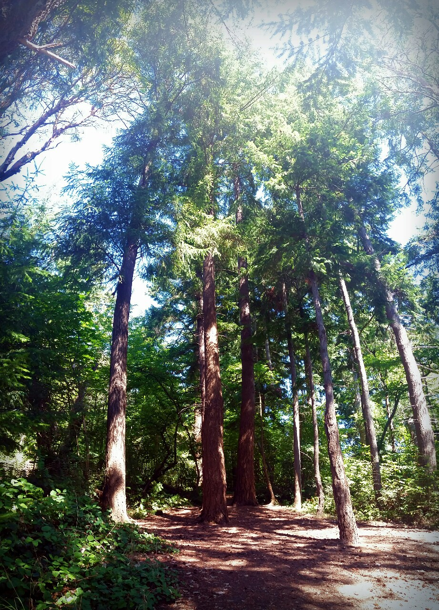

-
Neutral tones, pinks, and greens in this Bowstring Hemp desert-inspired picture.
-
White, pinks, a rich blue, and hints of magenta and yellow in the cherry blossoms at Wright Park Arboretum.
-
Vivid shades of green are highlighted or cast in shadow in these jungle leaves.
-
Pink, white, and tan colors of the orchid are starkly contrasted with the deep green leafy backdrop.
-
Yellowed grass clings to brown cliffs in arid Yakima, WA.
-

Bright yellow and white orchids stand out against the dark green background.
This is the color used to inspire this website!
-

Pale auburn trunks reach toward green leaf tips and a blue sky, roots gripping a deep reddish-brown earth.